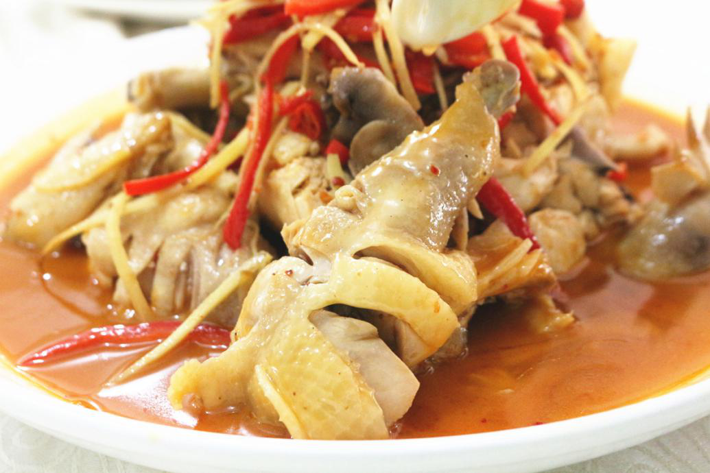
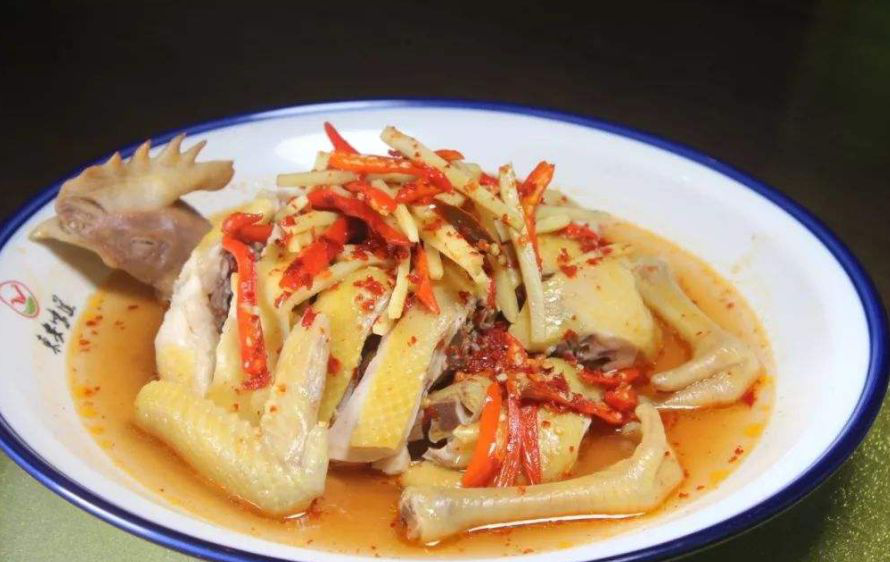

我最爱的美食


现在，就由我为大家隆重介绍一下这道菜：
作为一个地地
道道的东安人，就要不得不说一个家乡美食——东安鸡了！东安地处于湖
南南部，而东安鸡则是湖南传统名菜，发源于湖南省永州市东安县，原
名醋鸡。它是以七成熟鸡肉条加调料炒制而成。被列为国宴菜谱之一、
八大湘菜之首。口味稍辣，主要食材为母鸡、辣椒等。
历史典故——
相传，早在唐玄宗开元
年间，东安人就开始制作醋鸡。醋鸡改名为东安鸡有两种 说法：
一说是因清末湘军悍将，东安人席保田常以此菜宴客而得名；另一
说是北伐战争胜利后，国民革命军第八军军长唐生智在南京设宴待
客，席中有醋鸡一菜，颇受宾客称道，客人问及菜名，唐生智觉得
原名不雅，灵机一动，说是家乡东安鸡，从此，东安鸡之名不胫而
走。
其营养价值有壮腰健肾调理 贫血调理 气血双补调理等等。
如果你来到我的家乡东安，一定要找机
会品尝品尝这道好吃的菜哦！